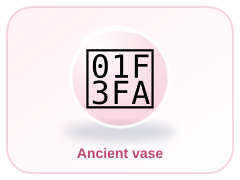
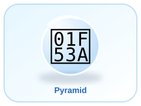
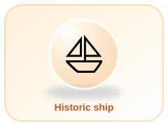

🪨
Prehistory
People lived long before written records. Tools, bones, art and buildings help archaeologists learn about their lives.
Discover how people lived, learned and changed the world
🏠 Back to Home🌐 Unified Hub


History is the study of people, places and events from the past. Historians use evidence to build explanations about what happened. Different sources can tell different parts of a story.
People lived long before written records. Tools, bones, art and buildings help archaeologists learn about their lives.
Communities such as Ancient Egypt and Mesopotamia built cities, farmed, traded and developed writing systems.
In many parts of the world, people lived in farming communities, towns and kingdoms, with different cultures and traditions.
Long-distance voyages connected regions, expanded trade and also brought conquest and hardship to many peoples.
New machines, factories, railways and energy systems changed work, travel and city life.
People developed faster communication, modern medicine, computers and space exploration.
Show people, places and objects at a particular time.
Can share what a person thought or experienced.
Can reveal how people made things and organised daily life.
People share memories and stories. Historians compare accounts with other evidence.
Question 1 of 5
Score: 0 / 5
Choose an old object at home, with an adult's permission. What might it tell you about how people lived? What else would you need to find out before making a conclusion?
Work through the full question bank. This is not limited to five questions. Read each question, choose an answer, and continue.
Score: 0